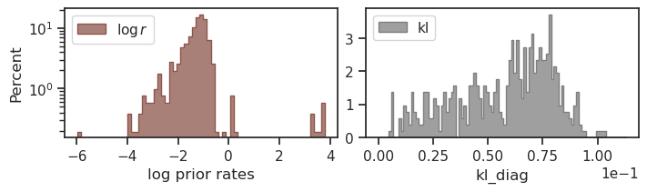

(18) Fig: Sparse Score#
Motivation: Device = cuda:0
Show code cell source
# HIDE CODE
import os, sys
from IPython.display import display
# tmp & extras dir
git_dir = os.path.join(os.environ['HOME'], 'Dropbox/git')
extras_dir = os.path.join(git_dir, 'jb-vae/_extras')
fig_base_dir = os.path.join(git_dir, 'jb-vae/figs')
tmp_dir = os.path.join(git_dir, 'jb-vae/tmp')
# GitHub
sys.path.insert(0, os.path.join(git_dir, '_PoissonVAE'))
from analysis.eval import sparse_score
from figures.fighelper import *
from vae.train_vae import *
# warnings, tqdm, & style
warnings.filterwarnings('ignore', category=DeprecationWarning)
warnings.filterwarnings('ignore', category=FutureWarning)
from rich.jupyter import print
%matplotlib inline
set_style()
Fig save dir#
from figures.imgs import plot_weights
fig_dir = pjoin(fig_base_dir, 'nips_may22')
os.makedirs(fig_dir, exist_ok=True)
print(os.listdir(fig_dir))
kws_fig = {
'transparent': True,
'bbox_inches': 'tight',
'dpi': 600,
}
[]
Device#
device_idx = 0
device = f'cuda:{device_idx}'
Load, make df#
root = add_home('Dropbox/chkpts/PoissonVAE')
fits = [f for f in sorted(os.listdir(root)) if 'st_chewie' not in f]
fits_st = [f for f in sorted(os.listdir(root)) if 'st_chewie' in f]
len(fits), len(fits_st)
(709, 90)
attrs = [
'dataset',
'type', 'enc_type', 'dec_type', 'latent_act',
'n_latents', 'n_categories', 'seed',
]
df = collections.defaultdict(list)
for name in tqdm(fits):
archi = name.split('-')[1]
cond = (
'mach' in name and
archi == '<conv+b|conv+b>'
)
if not cond:
continue
tr, meta = load_quick(
pjoin(root, name),
lite=True,
device=device,
verbose=False,
)
data, loss, etc = tr.validate()
loss_avg = {k: v.mean() for k, v in loss.items()}
loss_avg['nelbo'] = loss_avg['mse'] + loss_avg['kl']
vals = {k: meta[k] for k in ['checkpoint', 'timestamp']}
vals.update({a: getattr(tr.model.cfg, a, None) for a in attrs})
vals['n_params'] = sum([p.numel() for p in tr.parameters()])
vals['method'] = tr.cfg.method
vals.update(loss_avg)
for k, v in vals.items():
df[k].append(v)
df = pd.DataFrame(df)
0%| | 0/698 [00:00<?, ?it/s]/home/hadi/Dropbox/git/_PoissonVAE/base/common.py:353: UserWarning: Plan failed with a cudnnException: CUDNN_BACKEND_EXECUTION_PLAN_DESCRIPTOR: cudnnFinalize Descriptor Failed cudnn_status: CUDNN_STATUS_NOT_SUPPORTED (Triggered internally at /opt/conda/conda-bld/pytorch_1712608853085/work/aten/src/ATen/native/cudnn/Conv_v8.cpp:919.)
return F.conv2d(
100%|█████████████████████████████████████████| 698/698 [02:09<00:00, 5.41it/s]
sorted_df = df.sort_values(by=['n_latents', 'n_categories', 'seed'])
sorted_df[50:]
| checkpoint | timestamp | dataset | type | enc_type | dec_type | latent_act | n_latents | n_categories | seed | n_params | method | mse | kl | kl_diag | nelbo | |
|---|---|---|---|---|---|---|---|---|---|---|---|---|---|---|---|---|
| 68 | 1200 | 2024_05_15,21:08 | MNIST | poisson | conv | conv | None | 20 | NaN | 1 | 6163502 | mc | 24.677639 | 10.408147 | 0.520407 | 35.085785 |
| 22 | 1200 | 2024_05_16,04:14 | MNIST | gaussian | conv | conv | None | 20 | NaN | 2 | 6168622 | mc | 11.540724 | 12.959203 | 0.647960 | 24.499928 |
| 46 | 1200 | 2024_05_16,04:14 | MNIST | laplace | conv | conv | None | 20 | NaN | 2 | 6168622 | mc | 11.932611 | 13.525682 | 0.676284 | 25.458294 |
| 73 | 1200 | 2024_05_16,04:13 | MNIST | poisson | conv | conv | None | 20 | NaN | 2 | 6163502 | mc | 24.155241 | 10.632204 | 0.531610 | 34.787445 |
| 51 | 1200 | 2024_05_16,11:20 | MNIST | laplace | conv | conv | None | 20 | NaN | 3 | 6168622 | mc | 11.931331 | 13.443766 | 0.672188 | 25.375095 |
| 78 | 1200 | 2024_05_16,11:19 | MNIST | poisson | conv | conv | None | 20 | NaN | 3 | 6163502 | mc | 24.290165 | 10.655907 | 0.532795 | 34.946072 |
| 32 | 1200 | 2024_05_16,18:19 | MNIST | gaussian | conv | conv | None | 20 | NaN | 4 | 6168622 | mc | 11.603276 | 12.977507 | 0.648875 | 24.580784 |
| 56 | 1200 | 2024_05_16,18:30 | MNIST | laplace | conv | conv | None | 20 | NaN | 4 | 6168622 | mc | 12.012418 | 13.428583 | 0.671429 | 25.441002 |
| 83 | 1200 | 2024_05_16,18:22 | MNIST | poisson | conv | conv | None | 20 | NaN | 4 | 6163502 | mc | 24.246029 | 10.573205 | 0.528660 | 34.819233 |
| 36 | 1200 | 2024_05_17,01:20 | MNIST | gaussian | conv | conv | None | 20 | NaN | 5 | 6168622 | mc | 11.590926 | 12.979653 | 0.648983 | 24.570580 |
| 61 | 1200 | 2024_05_17,01:40 | MNIST | laplace | conv | conv | None | 20 | NaN | 5 | 6168622 | mc | 11.892796 | 13.596107 | 0.679805 | 25.488903 |
| 42 | 1200 | 2024_05_15,21:08 | MNIST | laplace | conv | conv | None | 50 | NaN | 1 | 6214762 | mc | 11.898366 | 13.565028 | 0.271301 | 25.463394 |
| 66 | 1200 | 2024_05_15,21:08 | MNIST | poisson | conv | conv | None | 50 | NaN | 1 | 6201962 | mc | 22.115925 | 11.458593 | 0.229172 | 33.574516 |
| 25 | 1200 | 2024_05_16,04:13 | MNIST | gaussian | conv | conv | None | 50 | NaN | 2 | 6214762 | mc | 11.527173 | 12.886459 | 0.257729 | 24.413631 |
| 47 | 1200 | 2024_05_16,04:18 | MNIST | laplace | conv | conv | None | 50 | NaN | 2 | 6214762 | mc | 11.649309 | 13.658458 | 0.273169 | 25.307766 |
| 71 | 1200 | 2024_05_16,04:11 | MNIST | poisson | conv | conv | None | 50 | NaN | 2 | 6201962 | mc | 21.597948 | 11.853975 | 0.237079 | 33.451923 |
| 27 | 1200 | 2024_05_16,11:19 | MNIST | gaussian | conv | conv | None | 50 | NaN | 3 | 6214762 | mc | 11.532110 | 12.959893 | 0.259198 | 24.492004 |
| 52 | 1200 | 2024_05_16,11:28 | MNIST | laplace | conv | conv | None | 50 | NaN | 3 | 6214762 | mc | 11.562448 | 13.874444 | 0.277489 | 25.436892 |
| 76 | 1200 | 2024_05_16,11:14 | MNIST | poisson | conv | conv | None | 50 | NaN | 3 | 6201962 | mc | 21.859102 | 11.798852 | 0.235977 | 33.657955 |
| 31 | 1200 | 2024_05_16,18:18 | MNIST | gaussian | conv | conv | None | 50 | NaN | 4 | 6214762 | mc | 11.495852 | 12.938600 | 0.258772 | 24.434452 |
| 57 | 1200 | 2024_05_16,18:35 | MNIST | laplace | conv | conv | None | 50 | NaN | 4 | 6214762 | mc | 11.775129 | 13.555191 | 0.271104 | 25.330320 |
| 81 | 1200 | 2024_05_16,18:18 | MNIST | poisson | conv | conv | None | 50 | NaN | 4 | 6201962 | mc | 21.243120 | 11.927020 | 0.238540 | 33.170139 |
| 37 | 1200 | 2024_05_17,01:17 | MNIST | gaussian | conv | conv | None | 50 | NaN | 5 | 6214762 | mc | 11.406070 | 12.914501 | 0.258290 | 24.320572 |
| 62 | 1200 | 2024_05_17,01:45 | MNIST | laplace | conv | conv | None | 50 | NaN | 5 | 6214762 | mc | 11.815315 | 13.538470 | 0.270769 | 25.353786 |
| 86 | 1200 | 2024_05_17,01:22 | MNIST | poisson | conv | conv | None | 50 | NaN | 5 | 6201962 | mc | 21.779110 | 11.714586 | 0.234292 | 33.493698 |
| 44 | 1200 | 2024_05_15,21:08 | MNIST | laplace | conv | conv | None | 100 | NaN | 1 | 6291662 | mc | 11.743516 | 13.606539 | 0.136065 | 25.350056 |
| 67 | 1200 | 2024_05_15,21:08 | MNIST | poisson | conv | conv | None | 100 | NaN | 1 | 6266062 | mc | 20.768387 | 12.144463 | 0.121445 | 32.912849 |
| 23 | 1200 | 2024_05_16,04:14 | MNIST | gaussian | conv | conv | None | 100 | NaN | 2 | 6291662 | mc | 11.402123 | 12.964794 | 0.129648 | 24.366917 |
| 48 | 1200 | 2024_05_16,04:18 | MNIST | laplace | conv | conv | None | 100 | NaN | 2 | 6291662 | mc | 11.943431 | 13.478678 | 0.134787 | 25.422108 |
| 74 | 1200 | 2024_05_16,04:12 | MNIST | poisson | conv | conv | None | 100 | NaN | 2 | 6266062 | mc | 20.974562 | 11.951008 | 0.119510 | 32.925568 |
| 28 | 1200 | 2024_05_16,11:15 | MNIST | gaussian | conv | conv | None | 100 | NaN | 3 | 6291662 | mc | 11.412882 | 12.977649 | 0.129776 | 24.390530 |
| 54 | 1200 | 2024_05_16,11:30 | MNIST | laplace | conv | conv | None | 100 | NaN | 3 | 6291662 | mc | 11.621343 | 13.573169 | 0.135732 | 25.194511 |
| 79 | 1200 | 2024_05_16,11:20 | MNIST | poisson | conv | conv | None | 100 | NaN | 3 | 6266062 | mc | 20.941238 | 12.126473 | 0.121265 | 33.067711 |
| 33 | 1200 | 2024_05_16,18:20 | MNIST | gaussian | conv | conv | None | 100 | NaN | 4 | 6291662 | mc | 11.465654 | 13.024783 | 0.130248 | 24.490437 |
| 59 | 1200 | 2024_05_16,18:38 | MNIST | laplace | conv | conv | None | 100 | NaN | 4 | 6291662 | mc | 11.929401 | 13.453764 | 0.134538 | 25.383165 |
| 84 | 1200 | 2024_05_16,18:24 | MNIST | poisson | conv | conv | None | 100 | NaN | 4 | 6266062 | mc | 20.961226 | 12.138924 | 0.121389 | 33.100151 |
| 38 | 1200 | 2024_05_17,01:21 | MNIST | gaussian | conv | conv | None | 100 | NaN | 5 | 6291662 | mc | 11.536151 | 13.028031 | 0.130280 | 24.564182 |
| 64 | 1200 | 2024_05_17,01:47 | MNIST | laplace | conv | conv | None | 100 | NaN | 5 | 6291662 | mc | 11.779410 | 13.603080 | 0.136031 | 25.382490 |
| 87 | 1200 | 2024_05_17,01:29 | MNIST | poisson | conv | conv | None | 100 | NaN | 5 | 6266062 | mc | 20.969341 | 12.130714 | 0.121307 | 33.100056 |
df_selected = df.loc[
(df['latent_act'].isnull()) &
(df['enc_type'] != 'mlp')
]
df_selected.shape
(203, 16)
df_selected
| checkpoint | timestamp | dataset | type | enc_type | dec_type | latent_act | n_latents | n_categories | seed | n_params | method | mse | kl | kl_diag | nelbo | |
|---|---|---|---|---|---|---|---|---|---|---|---|---|---|---|---|---|
| 0 | 1500 | 2024_05_15,02:05 | CIFAR10-PATCHES | categorical | conv | lin | None | 1 | 512.0 | 1 | 1405084 | exact | 174.093353 | 6.044831 | 6.044831 | 180.138184 |
| 1 | 1500 | 2024_05_15,11:37 | CIFAR10-PATCHES | categorical | conv | lin | None | 1 | 512.0 | 2 | 1405084 | exact | 174.858093 | 6.034148 | 6.034148 | 180.892242 |
| 2 | 1500 | 2024_05_15,21:14 | CIFAR10-PATCHES | categorical | conv | lin | None | 1 | 512.0 | 3 | 1405084 | exact | 174.635742 | 6.034076 | 6.034076 | 180.669815 |
| 3 | 1500 | 2024_05_16,06:50 | CIFAR10-PATCHES | categorical | conv | lin | None | 1 | 512.0 | 4 | 1405084 | exact | 174.558258 | 6.044322 | 6.044322 | 180.602585 |
| 4 | 1500 | 2024_05_14,21:24 | CIFAR10-PATCHES | categorical | conv | lin | None | 1 | 512.0 | 1 | 1405084 | mc | 170.705414 | 5.840983 | 5.840983 | 176.546402 |
| ... | ... | ... | ... | ... | ... | ... | ... | ... | ... | ... | ... | ... | ... | ... | ... | ... |
| 443 | 1200 | 2024_05_14,15:02 | MNIST | poisson | lin | lin | None | 512 | NaN | 1 | 803328 | mc | 33.282413 | 8.503514 | 0.016608 | 41.785927 |
| 444 | 1200 | 2024_05_14,22:15 | MNIST | poisson | lin | lin | None | 512 | NaN | 2 | 803328 | mc | 33.214127 | 8.516159 | 0.016633 | 41.730286 |
| 445 | 1200 | 2024_05_14,06:13 | MNIST | poisson | lin | lin | None | 512 | NaN | 3 | 803328 | mc | 33.092651 | 8.510839 | 0.016623 | 41.603493 |
| 446 | 1200 | 2024_05_14,12:59 | MNIST | poisson | lin | lin | None | 512 | NaN | 4 | 803328 | mc | 33.156258 | 8.499963 | 0.016601 | 41.656219 |
| 447 | 1200 | 2024_05_14,19:59 | MNIST | poisson | lin | lin | None | 512 | NaN | 5 | 803328 | mc | 33.295475 | 8.509435 | 0.016620 | 41.804909 |
203 rows × 16 columns
group_cols = ['dataset', 'type', 'enc_type', 'method']
df_avg = df_selected.groupby(by=group_cols).mean(numeric_only=True)
df_avg
| checkpoint | n_latents | n_categories | seed | n_params | mse | kl | kl_diag | nelbo | ||||
|---|---|---|---|---|---|---|---|---|---|---|---|---|
| dataset | type | enc_type | method | |||||||||
| CIFAR10-PATCHES | categorical | conv | exact | 1500.0 | 1.0 | 512.0 | 2.5 | 1405084.0 | 174.536362 | 6.039344 | 6.039344 | 180.575714 |
| mc | 1500.0 | 1.0 | 512.0 | 3.0 | 1405084.0 | 170.651077 | 5.818343 | 5.818343 | 176.469406 | |||
| lin | exact | 1500.0 | 1.0 | 512.0 | 3.0 | 262144.0 | 171.052765 | 6.077327 | 6.077327 | 177.130096 | ||
| mc | 1500.0 | 1.0 | 512.0 | 3.0 | 262144.0 | 169.156693 | 5.531371 | 5.531371 | 174.688065 | |||
| gaussian | conv | exact | 1500.0 | 512.0 | NaN | 3.0 | 1471132.0 | 94.298386 | 54.894402 | 0.107216 | 149.192795 | |
| mc | 1500.0 | 512.0 | NaN | 3.0 | 1471132.0 | 94.334351 | 54.898010 | 0.107223 | 149.232361 | |||
| lin | exact | 1500.0 | 512.0 | NaN | 3.0 | 393216.0 | 129.572296 | 36.288616 | 0.070876 | 165.860916 | ||
| mc | 1500.0 | 512.0 | NaN | 3.0 | 393216.0 | 129.618713 | 36.260994 | 0.070822 | 165.879715 | |||
| laplace | conv | exact | 1500.0 | 512.0 | NaN | 2.5 | 1471132.0 | 94.946976 | 59.405247 | 0.116026 | 154.352234 | |
| mc | 1500.0 | 512.0 | NaN | 3.0 | 1471132.0 | 95.088615 | 59.417992 | 0.116051 | 154.506622 | |||
| lin | exact | 1500.0 | 512.0 | NaN | 3.0 | 393216.0 | 125.368881 | 44.768963 | 0.087439 | 170.137848 | ||
| mc | 1500.0 | 512.0 | NaN | 3.0 | 393216.0 | 125.750595 | 44.314003 | 0.086551 | 170.064606 | |||
| poisson | conv | exact | 1500.0 | 512.0 | NaN | 5.0 | 1405596.0 | 127.746109 | 34.355988 | 0.067102 | 162.102097 | |
| mc | 1500.0 | 512.0 | NaN | 3.0 | 1405596.0 | 128.481323 | 34.472839 | 0.067330 | 162.954163 | |||
| lin | exact | 1500.0 | 512.0 | NaN | 3.0 | 262656.0 | 132.958420 | 34.144855 | 0.066689 | 167.103271 | ||
| mc | 1500.0 | 512.0 | NaN | 3.0 | 262656.0 | 132.981049 | 34.350060 | 0.067090 | 167.331131 | |||
| DOVES | categorical | conv | exact | 3000.0 | 1.0 | 512.0 | 5.0 | 1405084.0 | 180.441360 | 6.237063 | 6.237096 | 186.678421 |
| mc | 3000.0 | 1.0 | 512.0 | 4.5 | 1405084.0 | 166.012466 | 5.811967 | 5.804710 | 171.824432 | |||
| lin | exact | 3000.0 | 1.0 | 512.0 | 3.0 | 262144.0 | 168.839081 | 6.097071 | 6.094476 | 174.936157 | ||
| mc | 3000.0 | 1.0 | 512.0 | 3.0 | 262144.0 | 165.026779 | 5.456370 | 5.438096 | 170.483154 | |||
| gaussian | conv | exact | 3000.0 | 512.0 | NaN | 3.0 | 1471132.0 | 104.855057 | 49.534298 | 0.096402 | 154.389359 | |
| mc | 3000.0 | 512.0 | NaN | 3.0 | 1471132.0 | 104.863892 | 49.556473 | 0.096448 | 154.420364 | |||
| lin | exact | 3000.0 | 512.0 | NaN | 3.0 | 393216.0 | 122.373756 | 37.972328 | 0.073778 | 160.346100 | ||
| mc | 3000.0 | 512.0 | NaN | 3.0 | 393216.0 | 122.740829 | 37.555077 | 0.072946 | 160.295898 | |||
| laplace | conv | exact | 3000.0 | 512.0 | NaN | 4.5 | 1471132.0 | 107.567169 | 51.410339 | 0.099911 | 158.977509 | |
| mc | 3000.0 | 512.0 | NaN | 4.5 | 1471132.0 | 107.755600 | 51.483795 | 0.100039 | 159.239410 | |||
| lin | exact | 3000.0 | 512.0 | NaN | 3.0 | 393216.0 | 126.604431 | 40.727703 | 0.079051 | 167.332138 | ||
| mc | 3000.0 | 512.0 | NaN | 3.0 | 393216.0 | 126.914391 | 40.430794 | 0.078470 | 167.345184 | |||
| poisson | conv | exact | 3000.0 | 512.0 | NaN | 3.0 | 1405596.0 | 133.884933 | 28.541391 | 0.055187 | 162.426331 | |
| mc | 3000.0 | 512.0 | NaN | 3.0 | 1405596.0 | 134.469864 | 28.906284 | 0.055941 | 163.376129 | |||
| lin | exact | 3000.0 | 512.0 | NaN | 3.0 | 262656.0 | 138.697769 | 29.328970 | 0.056600 | 168.026733 | ||
| mc | 3000.0 | 512.0 | NaN | 3.0 | 262656.0 | 137.700592 | 29.469915 | 0.056879 | 167.170502 | |||
| MNIST | categorical | conv | exact | 1200.0 | 1.0 | 512.0 | 4.0 | 5432124.0 | 52.896759 | 6.238306 | 6.238306 | 59.135059 |
| mc | 1200.0 | 1.0 | 512.0 | 4.0 | 5432124.0 | 45.248413 | 6.138900 | 6.138899 | 51.387314 | |||
| lin | exact | 1200.0 | 1.0 | 512.0 | 3.0 | 802816.0 | 49.945030 | 6.134435 | 6.134434 | 56.079468 | ||
| mc | 1200.0 | 1.0 | 512.0 | 3.0 | 802816.0 | 33.773277 | 5.976613 | 5.976613 | 39.749893 | |||
| gaussian | conv | exact | 1200.0 | 512.0 | NaN | 2.5 | 5563708.0 | 28.410336 | 11.614848 | 0.022685 | 40.025185 | |
| mc | 1200.0 | 512.0 | NaN | 3.0 | 5563708.0 | 28.731003 | 11.354061 | 0.022176 | 40.085064 | |||
| lin | exact | 1200.0 | 512.0 | NaN | 3.0 | 1204224.0 | 28.809082 | 11.742345 | 0.022934 | 40.551430 | ||
| mc | 1200.0 | 512.0 | NaN | 3.0 | 1204224.0 | 29.341532 | 11.328033 | 0.022125 | 40.669563 | |||
| laplace | conv | exact | 1200.0 | 512.0 | NaN | 4.0 | 5563708.0 | 28.644033 | 12.348107 | 0.024117 | 40.992138 | |
| mc | 1200.0 | 512.0 | NaN | 4.0 | 5563708.0 | 28.864798 | 12.154332 | 0.023739 | 41.019131 | |||
| lin | exact | 1200.0 | 512.0 | NaN | 3.0 | 1204224.0 | 29.737339 | 12.356354 | 0.024134 | 42.093693 | ||
| mc | 1200.0 | 512.0 | NaN | 3.0 | 1204224.0 | 30.199966 | 11.926904 | 0.023295 | 42.126869 | |||
| poisson | conv | exact | 1200.0 | 512.0 | NaN | 3.0 | 5432636.0 | 30.343817 | 9.348623 | 0.018259 | 39.692444 | |
| mc | 1200.0 | 512.0 | NaN | 3.0 | 5432636.0 | 31.392435 | 8.695434 | 0.016983 | 40.087868 | |||
| lin | exact | 1200.0 | 512.0 | NaN | 3.0 | 803328.0 | 32.837242 | 8.620155 | 0.016836 | 41.457397 | ||
| mc | 1200.0 | 512.0 | NaN | 3.0 | 803328.0 | 33.208183 | 8.507982 | 0.016617 | 41.716167 |
a = df_selected.groupby(by=group_cols)['nelbo'].agg(list)
for index, value in a.items():
print("Index:", index, "Value:", value)
Index: ('CIFAR10-PATCHES', 'categorical', 'conv', 'exact') Value: [180.13818359375, 180.89224243164062, 180.66981506347656, 180.6025848388672]
Index: ('CIFAR10-PATCHES', 'categorical', 'conv', 'mc') Value: [176.54640197753906, 176.49183654785156, 176.40829467773438, 176.4200439453125, 176.48049926757812]
Index: ('CIFAR10-PATCHES', 'categorical', 'lin', 'exact') Value: [177.0965118408203, 177.15211486816406, 177.10379028320312, 177.198486328125, 177.09954833984375]
Index: ('CIFAR10-PATCHES', 'categorical', 'lin', 'mc') Value: [174.64102172851562, 174.69520568847656, 174.684814453125, 174.69032287597656, 174.72897338867188]
Index: ('CIFAR10-PATCHES', 'gaussian', 'conv', 'exact') Value: [149.20077514648438, 149.184814453125]
Index: ('CIFAR10-PATCHES', 'gaussian', 'conv', 'mc') Value: [149.22784423828125, 149.2368621826172]
Index: ('CIFAR10-PATCHES', 'gaussian', 'lin', 'exact') Value: [165.8238067626953, 165.78671264648438, 165.9171600341797, 165.8271484375, 165.94976806640625]
Index: ('CIFAR10-PATCHES', 'gaussian', 'lin', 'mc') Value: [165.83901977539062, 165.87985229492188, 165.86746215820312, 165.96466064453125, 165.84754943847656]
Index: ('CIFAR10-PATCHES', 'laplace', 'conv', 'exact') Value: [154.36074829101562, 154.3318634033203, 154.35516357421875, 154.3611297607422]
Index: ('CIFAR10-PATCHES', 'laplace', 'conv', 'mc') Value: [154.443115234375, 154.52517700195312, 154.5300750732422, 154.5535125732422, 154.48117065429688]
Index: ('CIFAR10-PATCHES', 'laplace', 'lin', 'exact') Value: [170.21923828125, 170.12301635742188, 170.13230895996094, 170.08030700683594, 170.13436889648438]
Index: ('CIFAR10-PATCHES', 'laplace', 'lin', 'mc') Value: [170.12271118164062, 170.00045776367188, 170.06597900390625, 170.06076049804688, 170.07308959960938]
Index: ('CIFAR10-PATCHES', 'poisson', 'conv', 'exact') Value: [162.1020965576172]
Index: ('CIFAR10-PATCHES', 'poisson', 'conv', 'mc') Value: [162.9320068359375, 162.97633361816406]
Index: ('CIFAR10-PATCHES', 'poisson', 'lin', 'exact') Value: [167.29100036621094, 167.05245971679688, 167.05911254882812, 167.08168029785156, 167.03213500976562]
Index: ('CIFAR10-PATCHES', 'poisson', 'lin', 'mc') Value: [167.37478637695312, 167.3026123046875, 167.3483428955078, 167.34140014648438, 167.28848266601562]
Index: ('DOVES', 'categorical', 'conv', 'exact') Value: [186.6784210205078]
Index: ('DOVES', 'categorical', 'conv', 'mc') Value: [171.7435302734375, 171.90533447265625]
Index: ('DOVES', 'categorical', 'lin', 'exact') Value: [174.97903442382812, 174.88047790527344, 175.0136260986328, 174.9761962890625, 174.83143615722656]
Index: ('DOVES', 'categorical', 'lin', 'mc') Value: [170.433837890625, 170.50439453125, 170.4735870361328, 170.502685546875, 170.5012664794922]
Index: ('DOVES', 'gaussian', 'conv', 'exact') Value: [154.41131591796875, 154.40408325195312, 154.34872436523438, 154.3526611328125, 154.42999267578125]
Index: ('DOVES', 'gaussian', 'conv', 'mc') Value: [154.457275390625, 154.41758728027344, 154.42779541015625, 154.37710571289062, 154.42205810546875]
Index: ('DOVES', 'gaussian', 'lin', 'exact') Value: [160.29562377929688, 160.37646484375, 160.32269287109375, 160.4324188232422, 160.30323791503906]
Index: ('DOVES', 'gaussian', 'lin', 'mc') Value: [160.27774047851562, 160.31455993652344, 160.2152862548828, 160.33094787597656, 160.3409881591797]
Index: ('DOVES', 'laplace', 'conv', 'exact') Value: [158.93682861328125, 159.01817321777344]
Index: ('DOVES', 'laplace', 'conv', 'mc') Value: [159.1189727783203, 159.35983276367188]
Index: ('DOVES', 'laplace', 'lin', 'exact') Value: [167.32266235351562, 167.30517578125, 167.3486785888672, 167.31661987304688, 167.3675537109375]
Index: ('DOVES', 'laplace', 'lin', 'mc') Value: [167.3756103515625, 167.3081512451172, 167.36428833007812, 167.33184814453125, 167.34603881835938]
Index: ('DOVES', 'poisson', 'conv', 'exact') Value: [162.54754638671875, 162.26992797851562, 162.32760620117188, 162.4830322265625, 162.5035400390625]
Index: ('DOVES', 'poisson', 'conv', 'mc') Value: [163.3902587890625, 163.35826110839844, 163.35311889648438, 163.28012084960938, 163.49893188476562]
Index: ('DOVES', 'poisson', 'lin', 'exact') Value: [168.4957275390625, 168.22645568847656, 168.32638549804688, 167.5585174560547, 167.526611328125]
Index: ('DOVES', 'poisson', 'lin', 'mc') Value: [167.24642944335938, 167.1602325439453, 167.119873046875, 167.22137451171875, 167.10458374023438]
Index: ('MNIST', 'categorical', 'conv', 'exact') Value: [59.135074615478516, 59.13502502441406, 59.13508987426758]
Index: ('MNIST', 'categorical', 'conv', 'mc') Value: [35.88841247558594, 59.134376525878906, 59.139156341552734]
Index: ('MNIST', 'categorical', 'lin', 'exact') Value: [56.490234375, 55.78322219848633, 56.532257080078125, 55.7138671875, 55.877742767333984]
Index: ('MNIST', 'categorical', 'lin', 'mc') Value: [39.68386459350586, 39.894248962402344, 39.59043502807617, 39.80326461791992, 39.777652740478516]
Index: ('MNIST', 'gaussian', 'conv', 'exact') Value: [40.072486877441406, 40.00803756713867, 40.02027893066406, 39.999935150146484]
Index: ('MNIST', 'gaussian', 'conv', 'mc') Value: [40.10683822631836, 40.08671569824219, 40.10142135620117, 40.067039489746094, 40.063316345214844]
Index: ('MNIST', 'gaussian', 'lin', 'exact') Value: [40.60163116455078, 40.527713775634766, 40.50861740112305, 40.526954650878906, 40.59222412109375]
Index: ('MNIST', 'gaussian', 'lin', 'mc') Value: [40.705413818359375, 40.686073303222656, 40.63188934326172, 40.65092849731445, 40.67352294921875]
Index: ('MNIST', 'laplace', 'conv', 'exact') Value: [40.98294448852539, 40.99547576904297, 40.99799728393555]
Index: ('MNIST', 'laplace', 'conv', 'mc') Value: [40.990840911865234, 41.020538330078125, 41.0460090637207]
Index: ('MNIST', 'laplace', 'lin', 'exact') Value: [42.10520935058594, 41.99394989013672, 42.08384704589844, 42.098487854003906, 42.18696212768555]
Index: ('MNIST', 'laplace', 'lin', 'mc') Value: [42.148223876953125, 42.10078811645508, 42.12898254394531, 42.10932159423828, 42.147037506103516]
Index: ('MNIST', 'poisson', 'conv', 'exact') Value: [39.799495697021484, 39.65928649902344, 39.72886276245117, 39.77765655517578, 39.49691390991211]
Index: ('MNIST', 'poisson', 'conv', 'mc') Value: [40.27238082885742, 39.99652099609375, 40.086647033691406, 40.03008270263672, 40.053714752197266]
Index: ('MNIST', 'poisson', 'lin', 'exact') Value: [41.49271774291992, 41.45032501220703, 41.422664642333984, 41.47850799560547, 41.442779541015625]
Index: ('MNIST', 'poisson', 'lin', 'mc') Value: [41.785926818847656, 41.73028564453125, 41.603492736816406, 41.656219482421875, 41.804908752441406]
data = a[('DOVES', 'poisson', 'conv', 'exact')]
boot = sp_stats.bootstrap(
data=(data,),
n_resamples=1000000,
statistic=np.mean,
paired=True,
)
print(boot)
BootstrapResult( confidence_interval=ConfidenceInterval(low=162.32408447265624, high=162.512939453125), bootstrap_distribution=array([162.4392334 , 162.4392334 , 162.31665039, ..., 162.31607056, 162.45741577, 162.35869141]), standard_error=0.04820227851772785 )
e = boot.standard_error * get_tval(4, 0.95)
(np.mean(data) - e, np.mean(data) + e)
(162.2924995861563, 162.5601615466562)
data = a[('DOVES', 'poisson', 'conv', 'mc')]
boot = sp_stats.bootstrap(
data=(data,),
n_resamples=1000000,
statistic=np.mean,
paired=True,
)
print(boot)
BootstrapResult( confidence_interval=ConfidenceInterval(low=163.3249481201172, high=163.44906311035157), bootstrap_distribution=array([163.35440369, 163.37510986, 163.33848267, ..., 163.41887207, 163.42630005, 163.3927948 ]), standard_error=0.031825872496181726 )
e = boot.standard_error * get_tval(4, 0.95)
(np.mean(data) - e, np.mean(data) + e)
(163.28777551775337, 163.46450109357474)
test = sp_stats.ttest_rel(
a=a[('DOVES', 'poisson', 'conv', 'exact')],
b=a[('DOVES', 'poisson', 'conv', 'mc')],
)
test.statistic, test.pvalue
(-17.087879749280134, 6.879351416486745e-05)
test = sp_stats.ttest_rel(
a=a[('CIFAR10-PATCHES', 'poisson', 'lin', 'exact')],
b=a[('CIFAR10-PATCHES', 'poisson', 'lin', 'mc')],
)
test.statistic, test.pvalue
(-6.218841029317539, 0.0034035040482166697)
Load model, plot dec weights#
models2load = {
'poisson': 'poisson-<lin|lin>-DOVES-mc_mach-5_(2024_05_14,04:46)',
'categorical': 'categorical-<lin|lin>-DOVES-mc_mach-5_(2024_05_14,04:04)',
'gaussian': 'gaussian-<lin|lin>-DOVES-mc_mach-5_(2024_05_14,04:09)',
'laplace': 'laplace-<lin|lin>-DOVES-mc_mach-5_(2024_05_14,04:12)',
}
models2load = {k: v.replace('/', ':') for k, v in models2load.items()}
trainers = {}
for name, load_path in models2load.items():
try:
trainers[name], _ = load_quick(
pjoin(root, load_path),
lite=True,
device=device,
verbose=True,
)
except FileNotFoundError:
continue
# params: 262.7 K
# params: 262.7 K
# params: 394.2 K
# params: 394.2 K
%%time
for name, tr in trainers.items():
data, loss, etc, thres, dead = detect_dead_neurons(tr)
print(f"{name}, # dead: {dead.sum()}")
if tr.model.cfg.type == 'categorical':
order = etc['logits'].mean(0).ravel()
order = np.argsort(order)[::-1]
else:
order = np.argsort(loss['kl_diag'])
fig, ax = tr.model.show(order=order, dpi=80) # , figsize=(16, 8))
# save
fname = '_'.join([
'phi',
tr.model.cfg.enc_type,
f"{tr.model.cfg.type}.png",
])
fname = pjoin(fig_dir, fname)
fig.savefig(fname=fname, **kws_fig)
poisson, # dead: 8

categorical, # dead: 0
gaussian, # dead: 401

laplace, # dead: 416

CPU times: user 6.7 s, sys: 2.86 s, total: 9.56 s
Wall time: 9.55 s
Explore models, one by one#
Poisson#
tr = trainers['poisson']
data, loss, etc, dead_thres, dead = detect_dead_neurons(tr)
loss_avg = {k: v.mean() for k, v in loss.items()}
loss_avg['tot'] = loss_avg['mse'] + loss_avg['kl']
print(loss_avg)
{'mse': 137.7962, 'kl': 29.459375, 'kl_diag': 0.056859836, 'tot': 167.25558}
fig, ax = create_figure()
ax.plot(tr.stats['grad'].keys(), np.log(list(tr.stats['grad'].values())))
ax.axhline(np.log(tr.cfg.grad_clip), color='r')
plt.show()
fig, axes = create_figure(1, 2, (7, 2.0), cnst=True)
kws = dict(stat='percent', element='step')
sns.histplot(tonp(tr.model.log_rate.squeeze()), label=r'$\log r$', color='C5', ax=axes[0], **kws)
bins = np.linspace(0, loss['kl_diag'].max() * 1.1, 100)
sns.histplot(loss['kl_diag'], bins=bins, ax=axes[1], label='kl', color='C7', **kws)
add_legend(axes, loc='upper left')
axes[0].set(xlabel='log prior rates', yscale='log')
axes[1].set(xlabel='kl_diag', ylabel='', yscale='linear')
axes[1].ticklabel_format(
axis='x',
style='sci',
scilimits=(0, 0),
)
plt.show()

fig, ax = create_figure(1, 1, (8, 3))
bins = np.linspace(0, 125, 126)
sns.histplot(loss['kl_diag'][~dead] * 1000, bins=bins, color='dimgrey', label='alive', ax=ax)
sns.histplot(loss['kl_diag'][dead] * 1000, bins=bins, color='r', label='dead', ax=ax)
ax.axvline(dead_thres * 1000, color='r', ls='--', alpha=0.6)
ax.locator_params(axis='x', nbins=11)
ax.legend()
plt.show()

fig, ax= create_figure(figsize=(6, 3))
sns.kdeplot(tonp(tr.model.fc_enc.weight).ravel(), color='k', label='enc', fill=True, ax=ax)
sns.kdeplot(tonp(tr.model.fc_dec.weight).ravel(), color='C6', label='dec', ls='--', ax=ax)
ax.set(xlim=(-0.3, 0.3))
add_legend(ax)
plt.show()
order = np.argsort(loss['kl_diag'])
w_dec = tonp(tr.model.fc_dec.weight)
norms = sp_lin.norm(w_dec, axis=0)
w_dec = w_dec.T.reshape(-1, 16, 16)
w_dec = w_dec[order]
norms = norms[order]
dead = dead[order]
norm99 = np.quantile(norms, 0.99)
norms_scaled = np.clip(norms / norm99, 0, 1)
_ = plot_weights(w_dec, scaling=None)
_ = plot_weights(w_dec, scaling=norms_scaled)
_ = plot_weights(w_dec, scaling=(~dead).astype(float))

Gaussian#
tr = trainers['gaussian']
data, loss, etc, dead_thres, dead = detect_dead_neurons(tr)
loss_avg = {k: v.mean() for k, v in loss.items()}
loss_avg['tot'] = loss_avg['mse'] + loss_avg['kl']
print(loss_avg)
{'mse': 122.805855, 'kl': 37.543747, 'kl_diag': 0.07292354, 'tot': 160.34961}
fig, ax = create_figure()
ax.plot(tr.stats['grad'].keys(), np.log(list(tr.stats['grad'].values())))
ax.axhline(np.log(tr.cfg.grad_clip), color='r')
plt.show()

fig, axes = create_figure(1, 2, (7, 2.0), cnst=True)
kws = dict(stat='percent', element='step')
sns.histplot(np.log(etc['scale'].mean(0)), label=r'$\log \sigma$', color='C5', ax=axes[0], **kws)
bins = np.linspace(0, loss['kl_diag'].max() * 1.1, 100)
sns.histplot(loss['kl_diag'], bins=bins, ax=axes[1], label='kl', color='C7', **kws)
axes[0].legend(loc='upper left')
axes[1].legend(loc='upper right')
axes[0].set(xlabel='log sigma', yscale='log')
axes[1].set(xlabel='kl_diag', ylabel='', yscale='log')
axes[1].ticklabel_format(
axis='x',
style='sci',
scilimits=(0, 0),
)
plt.show()

fig, ax = create_figure(1, 1, (8, 3))
bins = np.linspace(0, 80, 81)
sns.histplot(loss['kl_diag'][~dead] * 100, bins=bins, color='dimgrey', label='alive', ax=ax)
sns.histplot(loss['kl_diag'][dead] * 100, bins=bins, color='r', label='dead', ax=ax)
ax.axvline(dead_thres * 100, color='r', ls='--', alpha=0.6)
ax.locator_params(axis='x', nbins=11)
ax.set(yscale='log')
ax.legend()
plt.show()

fig, ax= create_figure(figsize=(6, 3))
sns.kdeplot(tonp(tr.model.fc_enc.weight).ravel(), color='k', label='enc', fill=True, ax=ax)
sns.kdeplot(tonp(tr.model.fc_dec.weight).ravel(), color='C6', label='dec', ls='--', ax=ax)
ax.set(xlim=(-0.3, 0.3))
add_legend(ax)
plt.show()

order = np.argsort(loss['kl_diag'])
w_dec = tonp(tr.model.fc_dec.weight)
norms = sp_lin.norm(w_dec, axis=0)
w_dec = w_dec.T.reshape(-1, 16, 16)
w_dec = w_dec[order]
norms = norms[order]
dead = dead[order]
norm99 = np.quantile(norms, 0.99)
norms_scaled = np.clip(norms / norm99, 0, 1)
_ = plot_weights(w_dec, scaling=None)
_ = plot_weights(w_dec, scaling=norms_scaled)
_ = plot_weights(w_dec, scaling=(~dead).astype(float))


Laplace#
tr = trainers['laplace']
data, loss, etc, dead_thres, dead = detect_dead_neurons(tr)
loss_avg = {k: v.mean() for k, v in loss.items()}
loss_avg['tot'] = loss_avg['mse'] + loss_avg['kl']
print(loss_avg)
{'mse': 126.97458, 'kl': 40.408463, 'kl_diag': 0.07842732, 'tot': 167.38304}
fig, ax = create_figure()
ax.plot(tr.stats['grad'].keys(), np.log(list(tr.stats['grad'].values())))
ax.axhline(np.log(tr.cfg.grad_clip), color='r')
plt.show()

fig, axes = create_figure(1, 2, (7, 2.0), cnst=True)
kws = dict(stat='percent', element='step')
sns.histplot(np.log(etc['scale'].mean(0)), label=r'$\log \sigma$', color='C5', ax=axes[0], **kws)
bins = np.linspace(0, loss['kl_diag'].max() * 1.1, 100)
sns.histplot(loss['kl_diag'], bins=bins, ax=axes[1], label='kl', color='C7', **kws)
axes[0].legend(loc='upper left')
axes[1].legend(loc='upper right')
axes[0].set(xlabel='log sigma', yscale='log')
axes[1].set(xlabel='kl_diag', ylabel='', yscale='log')
axes[1].ticklabel_format(
axis='x',
style='sci',
scilimits=(0, 0),
)
plt.show()

dead_thres = 8e-2
dead = loss['kl_diag'] < dead_thres
dead.sum()
416
fig, ax = create_figure(1, 1, (8, 3))
bins = np.linspace(0, 80, 81)
sns.histplot(loss['kl_diag'][~dead] * 100, bins=bins, color='dimgrey', label='alive', ax=ax)
sns.histplot(loss['kl_diag'][dead] * 100, bins=bins, color='r', label='dead', ax=ax)
ax.axvline(dead_thres * 100, color='r', ls='--', alpha=0.6)
ax.locator_params(axis='x', nbins=11)
ax.set(yscale='log')
ax.legend()
plt.show()

fig, ax= create_figure(figsize=(6, 3))
sns.kdeplot(tonp(tr.model.fc_enc.weight).ravel(), color='k', label='enc', fill=True, ax=ax)
sns.kdeplot(tonp(tr.model.fc_dec.weight).ravel(), color='C6', label='dec', ls='--', ax=ax)
ax.set(xlim=(-0.3, 0.3))
add_legend(ax)
plt.show()

order = np.argsort(loss['kl_diag'])
w_dec = tonp(tr.model.fc_dec.weight)
norms = sp_lin.norm(w_dec, axis=0)
w_dec = w_dec.T.reshape(-1, 16, 16)
w_dec = w_dec[order]
norms = norms[order]
dead = dead[order]
norm99 = np.quantile(norms, 0.99)
norms_scaled = np.clip(norms / norm99, 0, 1)
_ = plot_weights(w_dec, scaling=None)
_ = plot_weights(w_dec, scaling=norms_scaled)
_ = plot_weights(w_dec, scaling=(~dead).astype(float))


kl = loss['kl_diag'][order]
fig, ax = create_figure(1, 1, (3, 3))
sns.scatterplot(x=norms[~dead], y=kl[~dead], color='r', ax=ax)
sns.scatterplot(x=norms[dead], y=kl[dead], color='dimgrey', ax=ax)
ax_square(ax)
ax.grid()
plt.show()

df = pd.DataFrame({'kl': kl, 'norm': norms, 'dead': dead})
fig, axes = create_figure(1, 2, (5, 4))
sns.boxplot(data=df, x='dead', y='norm', hue='dead', dodge=False, ax=axes[0])
sns.boxplot(data=df, x='dead', y='kl', hue='dead', dodge=False, ax=axes[1])
add_grid(axes)
move_legend(axes[0])
plt.show()

Categorical#
tr = trainers['categorical']
data, loss, etc, dead_thres, dead = detect_dead_neurons(tr)
loss_avg = {k: v.mean() for k, v in loss.items()}
loss_avg['tot'] = loss_avg['mse'] + loss_avg['kl']
print(loss_avg)
{'mse': 164.98459, 'kl': 5.458941, 'kl_diag': 5.4424906, 'tot': 170.44353}
fig, ax = create_figure()
ax.plot(tr.stats['grad'].keys(), np.log(list(tr.stats['grad'].values())))
ax.axhline(np.log(tr.cfg.grad_clip), color='r')
plt.show()

fig, ax= create_figure(figsize=(6, 3))
sns.kdeplot(tonp(tr.model.fc_enc.weight).ravel(), color='k', label='enc', fill=True, ax=ax)
sns.kdeplot(tonp(tr.model.fc_dec.weight).ravel(), color='C6', label='dec', ls='--', ax=ax)
ax.set(xlim=(-2.0, 2.0))
add_legend(ax)
plt.show()

tr.model.show(dpi=150);